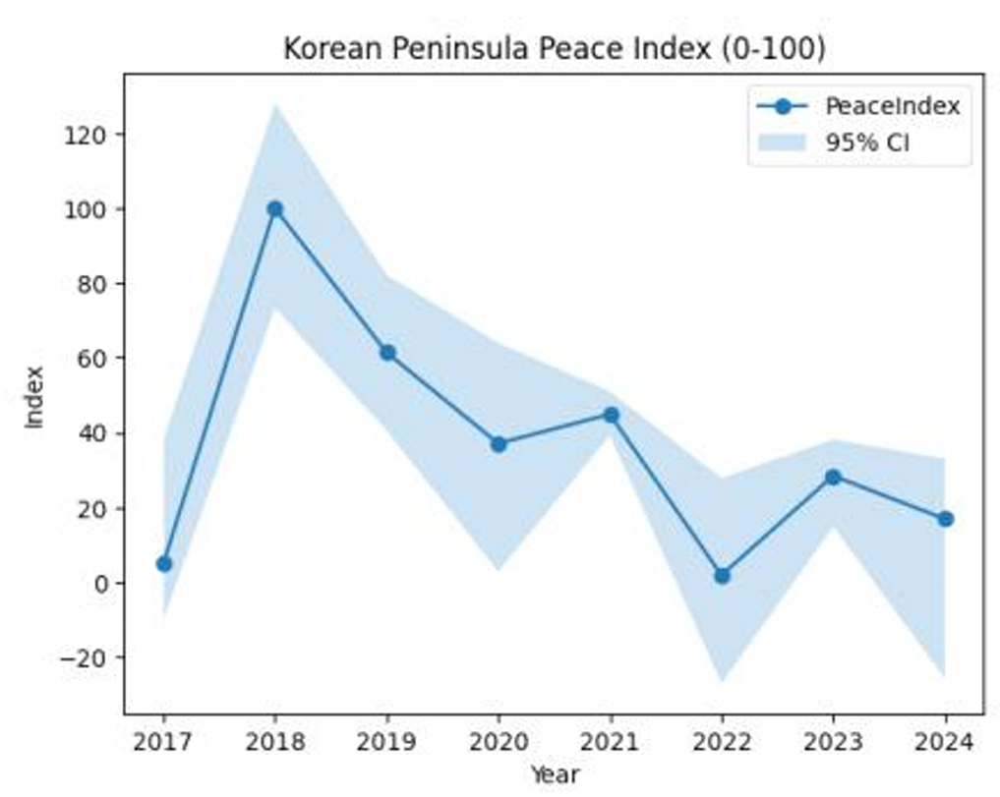
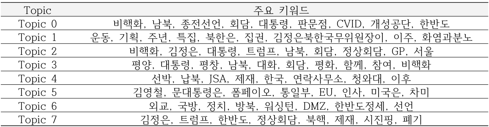

베이지안 토픽모델링을 주제로 한 프로젝트 2개.
첫 번째는 LDA에 SGLD를 결합해 속도와 주제 해석력을 함께 확보한 알고리즘 연구, 두 번째는 토픽모델링을 한반도 평화지수 검증에 적용한 학제간 데이터 분석
| 프로젝트 | 무엇을 | 핵심 성과 |
|---|---|---|
| 첫 번째 · LDA + SGLD 하이브리드 | 토픽모델링의 속도-품질 딜레마를 이산(Gibbs)·연속(SGLD) 분리 하이브리드로 해결 | Coherence 0.421 → 0.705 (+67%) |
| 두 번째 · 한반도 평화지수 | 학제간 3인 팀의 유일한 데이터 전공자로 4영역 14지표 지수 설계 + LDA 담론 교차 검증 | AHP 일관성 CR≈0.00001 · 부트스트랩 95% CI · "외교 단절이 병목" 정량 입증 |
01첫 번째 프로젝트 · LDA + SGLD 하이브리드
문제
Gibbs 기반 LDA는 매 반복 전체 데이터를 재계산해 대규모 문서 처리에 한계
역할
주연구원 단독 수행 (2025.04–07)
사용 기술
Python, LDA, Gibbs Sampling, SGLD
수행 내용
- 미니배치 비편향 기울기 수식 직접 유도·검수 후 구현
- 이산 할당(Gibbs)·연속 파라미터(SGLD) 분리 하이브리드 순환 구조 설계
- 20 Newsgroups 18,000 문서 대상 3지표(Perplexity·Coherence·Silhouette) 통제 평가
결과
LDA+SGLD 하이브리드 성능 (20 Newsgroups 18,000 문서, 토픽 수 3~20 전 구간 비교)
| 지표 | 표준 LDA (gensim/sklearn) | SGLD-Gibbs-LDA (제안) |
|---|---|---|
| Coherence (주제 해석력, K=5) | 0.421 | 0.705 (+67%) |
| Perplexity (생성 품질) | Gibbs 우수 | 열세 |
| Silhouette (군집 명확성) | 패키지 우수 | 열세 |
- 지표마다 승자가 다름 → 사람이 결과를 읽는 도메인에서는 "이 주제가 말이 되는가(Coherence)"가 우선이라는 기준으로 실용적 균형점 선정. "무엇을 위한 모델인가에 따라 평가 기준부터 달라져야 한다"는 이후 전 프로젝트의 판단 원칙 획득
- 미니배치 비편향 기울기 수식을 손으로 유도·검수("파라미터 미분 검수"를 연구 일정의 별도 단계로 설정)한 뒤 구현
02두 번째 프로젝트 · 한반도 평화지수
문제
전문가 주관에 의존하던 한반도 평화지수의 재현성 부족 (2016년 이후 조사 중단)
역할
학제간 3인 팀(통일외교안보·북한학) 내 유일 데이터 전공자로 정량 분석 전담 (2025.11)
사용 기술
AHP (쌍대비교), Bootstrap, 한국어 전처리·크롤링
수행 내용
- 4영역 14지표 평화지수 체계 설계 (z-표준화·방향성 정렬·AHP 가중치 CR≈0.00001)
- 부트스트랩 1,000회 95% 신뢰구간 산출 및 결측-0 구분 정책 수립
- 통일부 2018년 언론 기사 전체 크롤링 및 LDA(K=8) 담론-지수 교차 검증
결과
- 4영역 14지표: 군사긴장(핵실험·미사일 등 5지표, 부정 가중치)·경제교류(5)·인도적 교류(2)·외교(2). 핵실험 10점·미사일 7점 등 파급력 순 가중치는 도메인 전공 팀원의 문헌 근거를 AHP 쌍대비교로 정량화, 일관성 비율 CR≈0.00001로 자기모순 없음 검증
- "지원이 0이었던 해"와 "기록이 없는 해"를 구분하는 결측 정책, 부트스트랩 1,000회 95% 신뢰구간, 난수 시드 고정 재현성

- 분석 결과: 2018년 4영역 동시 정점(100) → 하노이 회담 결렬 후 외교 영역 0으로 고착, 2023년 군사 영역 일부 회복에도 종합지수 미반등 → 외교 채널 단절이 다른 모든 교류를 막는 병목임을 정량 입증
- 통일부 2018년 언론 기사 전량 크롤링, K=8 선정(Coherence·Perplexity·Diversity·Stability 4지표 비교) 후 월별 토픽 비중으로 "평창 참가→남북정상회담→북미정상회담→평양회담→실무협상" 담론 흐름을 복원해 지수 변동과 언론 의제의 연동을 교차 검증
